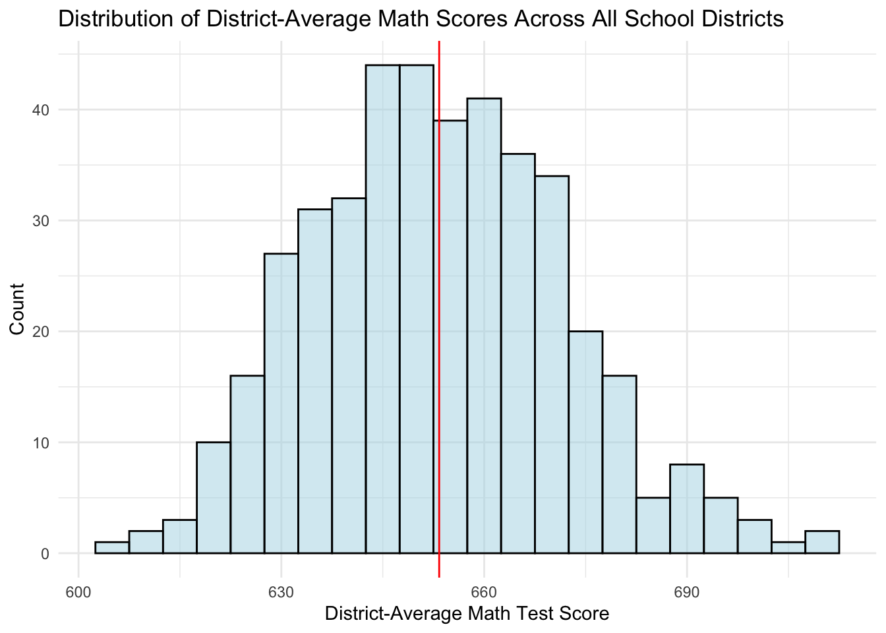
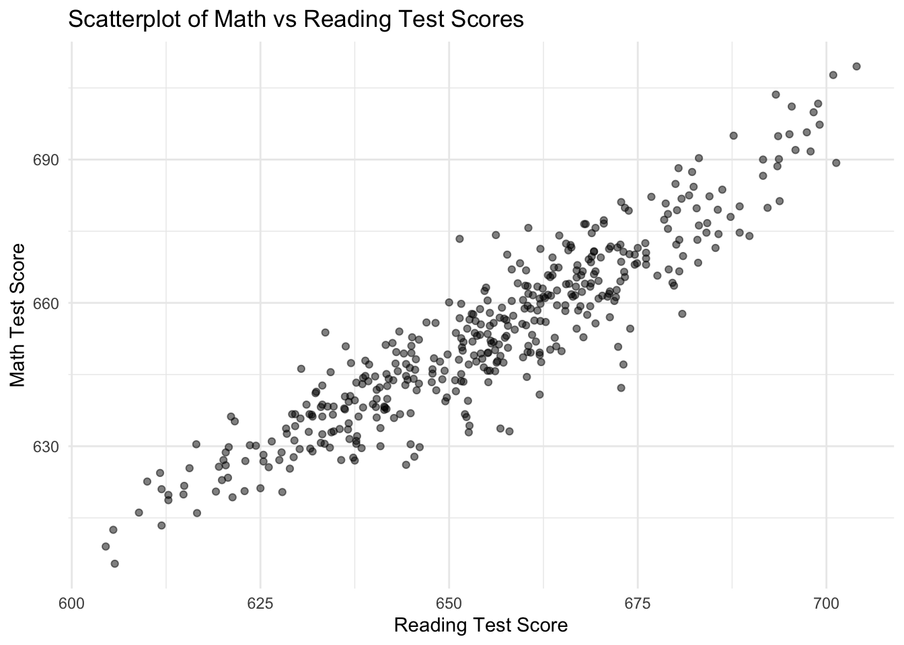
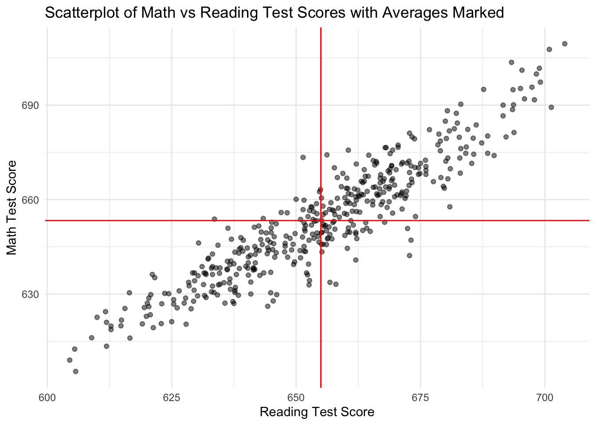
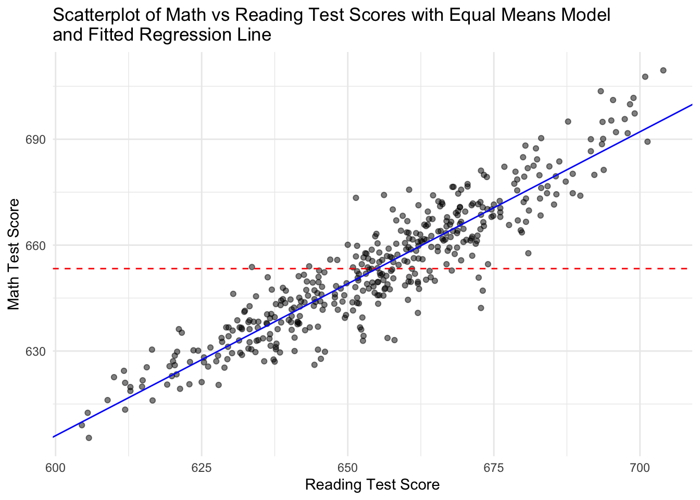
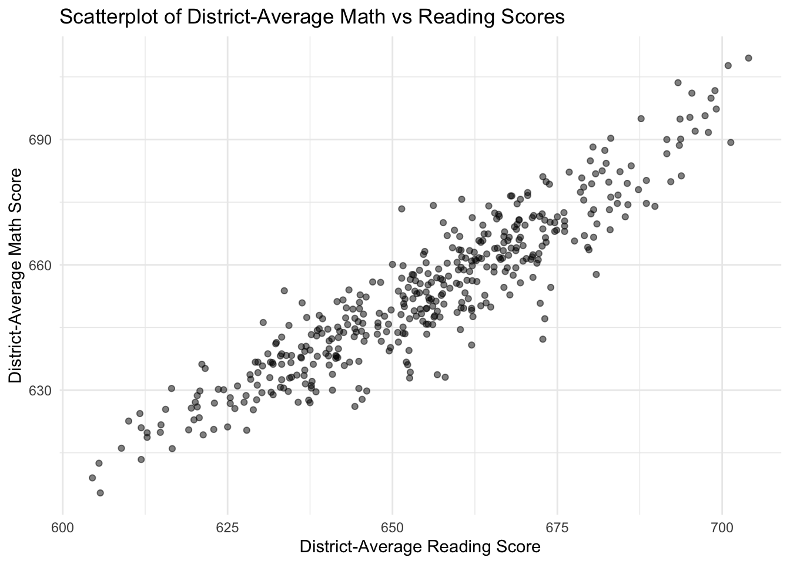
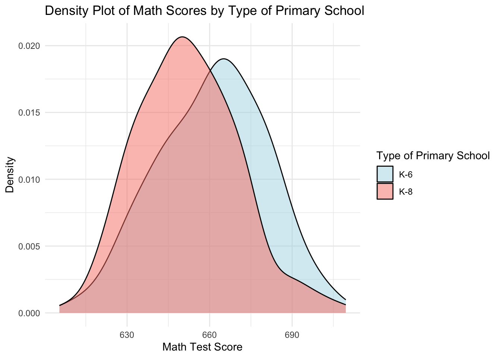
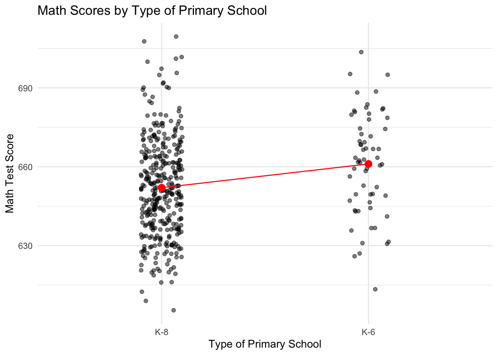

# dataset we will be using
library(AER)
data("CASchools")
# package for cleaning and organizing data
library(tidyverse)Ordinary Least Square Regression
Abstract
This research guide provides an introdcution to ordinary least square regression (OLS), including the theoretical and mathematical background of OLS, the assumptions of OLS, when to use OLS in practice, how to implement OLS regression, and how to interpret results from OLS regression.
Keywords
OLS, Regression, Continuous Varibales, Categorical Variables, R, Julia, glm, lm, t.test, anova
Introduction
Regression (Montgomery, Peck, and Vining 2021) is a powerful body of statistical methods for constructing equations to describe the relationship between a response variable (often referred to as a dependent or outcome variable) and a set of predictor variables (often referred to as independent variables). Regression models can be used for all three of the primary goals of statistical analysis:
- Description: to describe the relationship between response and predictor variables
- Inference: to infer relationships in a population based on relationships in a sample from that population
- Prediction: to predict future values of a response variable based on values of the predictor variables
Ordinary least squares (OLS) regression is the most common method for estimating a linear regression model. In this guide, we’ll discuss when to use OLS, the assumptions of OLS, how to implement OLS regression, and how to interpret results from OLS regression. Let’s start with a guiding example.
Performance in School
Educators, students, and parents are often quite invested in students’ performance on standardized tests. These test scores often play a large role in a student’s ability to be accepted into selective high schools and colleges.
The California Test Score Dataset contains data on test performance, school characteristics, and student demographic backgrounds for primary schools in California (Kleiber and Zeileis 2026). Using this dataset, we will assess how linear models (and specifically, ordinary least squares regression) can help us describe, infer from, and make predictions about test performance among these students.
Prediction - Initial Intuitions
The Equal Means Model
Imagine that you work for the California’s State Department of Education. You have been sent to visit a randomly selected school in the state. What would you expect the average test score to be in this school? An initial guess might be the average test score across all school districts in the state. Let’s take a look at what this average is, and how all school districts relate to this average.
Here are the variables in the dataset
# the first few rows of the dataset
knitr::kable(head(CASchools),
caption = "California Test Score Dataset for First 5 Schools ")| district | school | county | grades | students | teachers | calworks | lunch | computer | expenditure | income | english | read | math |
|---|---|---|---|---|---|---|---|---|---|---|---|---|---|
| 75119 | Sunol Glen Unified | Alameda | KK-08 | 195 | 10.90 | 0.5102 | 2.0408 | 67 | 6384.911 | 22.690001 | 0.000000 | 691.6 | 690.0 |
| 61499 | Manzanita Elementary | Butte | KK-08 | 240 | 11.15 | 15.4167 | 47.9167 | 101 | 5099.381 | 9.824000 | 4.583334 | 660.5 | 661.9 |
| 61549 | Thermalito Union Elementary | Butte | KK-08 | 1550 | 82.90 | 55.0323 | 76.3226 | 169 | 5501.955 | 8.978000 | 30.000002 | 636.3 | 650.9 |
| 61457 | Golden Feather Union Elementary | Butte | KK-08 | 243 | 14.00 | 36.4754 | 77.0492 | 85 | 7101.831 | 8.978000 | 0.000000 | 651.9 | 643.5 |
| 61523 | Palermo Union Elementary | Butte | KK-08 | 1335 | 71.50 | 33.1086 | 78.4270 | 171 | 5235.988 | 9.080333 | 13.857677 | 641.8 | 639.9 |
| 62042 | Burrel Union Elementary | Fresno | KK-08 | 137 | 6.40 | 12.3188 | 86.9565 | 25 | 5580.147 | 10.415000 | 12.408759 | 605.7 | 605.4 |
Let’s first investigate the test score for math. The average test score for math across all schools is:
# average math test score across all schools
mean(CASchools$math)[1] 653.3426So, a relatively reasonable guess for the test score of the random school we are visiting is 653.34. But how good of a guess is this? Let’s look at the distribution of test scores across all schools, and see where this mean value falls relative to the rest of the data.
# plot of distribution of math test scores across all schools with mean value marked
CASchools %>%
ggplot(aes(x = math)) +
geom_histogram(binwidth = 5, fill = "lightblue", color = "black", alpha = 0.5) +
geom_vline(xintercept = mean(CASchools$math), color="red") +
labs(title = "Distribution of Math Test Scores Across All Schools",
x = "Math Test Score", y = "Count") +
theme_minimal()
As is common with much real-life data, the mean of the math variable seems to be at the center of the distribution, and many observations seem to be relatively near the mean. However, many observations are also quite far from the mean, and only about 3% of observations are within one point of the mean:
# percentage of observations within one point of the mean
sum(abs(CASchools$math - mean(CASchools$math)) < 1) / nrow(CASchools)[1] 0.03333333As such, although the mean math score across all schools may be close to the math score of a randomly selected school, this guess can drastically be improved. How so?
Well, we can leverage the fact that we also have access to other data for each school, and this other data may be highly predictive of that school’s math score.
Considering other Variables
Let’s plot the relationship between a school’s math score and a variable that we might believe is related: that school’s reading score. An initial hypothesis could be that schools with higher reading scores might have higher math scores (i.e, a hypothesis resting on the assumption that some schools are better or worse at both types of test). Another competing hypothesis could be that schools with higher reading scores might have lower math scores (i.e., a hypothesis resting on the assumption that some schools might be better at math, but this may be at the cost of a reading).
To get an initial sense on if either of these hypotheses are reasonable, we can plot a scatterplot of the math and read variables:
# plot of math vs read test scores
CASchools %>%
ggplot(aes(x = read, y = math)) +
geom_point(alpha = 0.5) +
labs(title = "Scatterplot of Math vs Reading Test Scores",
x = "Reading Test Score", y = "Math Test Score") +
theme_minimal()
Based on this plot, it certainly looks like schools with higher reading scores also tend to have higher math scores. As such, when we reconsider the equal-means model from earlier, we can get already begin to easily think of ways to improve that model. Specifically, since we know that schools higher in one score tend to be higher in another, if we know a school is above the average in reading, we can predict that it is also likely to be above the average in math. Similarly, if we know a school is below the average in reading, we can predict that it is also likely to be below the average in math:
# plot of math vs read test scores with average math score
# and average reading score marked
CASchools %>%
ggplot(aes(x = read, y = math)) +
geom_point(alpha = 0.5) +
geom_vline(xintercept = mean(CASchools$read), color="red") +
geom_hline(yintercept = mean(CASchools$math), color="red") +
labs(title="Scatterplot of Math vs Reading Test Scores with Averages Marked",
x = "Reading Test Score", y = "Math Test Score") +
theme_minimal()
By looking at the plot above, we can see that most points fall in the lower-left corner and the upper right corner. That is, schools tend tend to be either above average in both reading and math, or below average in both reading and math. This suggests that we can make a better prediction about a school’s math score (and it’s relationship to the mean) if we also know that school’s reading score. Specifically, if we know a school is above average in reading, we can predict that it is also likely to be above average in math. Similarly, if we know a school is below average in reading, we can predict that it is also likely to be below average in math.
However, this is still a very simple model. What if we want to know the magnitude of how far a school’s math score is from the mean, based on how far that school’s reading score is from the mean? Better yet, what if we didn’t even have to directly consider the mean, and with just a school’s reading score, we could predict that school’s math score?
With OLS regression for one predictor variable, we can find the line of the form \(Y = \beta_0 + X\beta_1\) , where \(\beta_0\) and \(\beta_1\) are our regression coefficients that best fit the data. We can use this equation to make highly precise predictions about a school’s math score based on that school’s reading score.
Fitting the Line of Best Fit
There are an infinite number of lines that can be “fit” to a scatterplot of two variables.

How do we know what line best fits the data? Different methods differ in how they choose the “best” line for the data.
In OLS regression, this is done by minimizing the sum of squared residuals (SSR). A residual is the difference between the observed dependent variable, \(Y\), and the fitted or predicted values of the dependent variable, \(\hat{Y}\).

For OLS regression with one predictor, we obtain fitted values using the regression equation \(\hat{Y} = \hat{\beta}_0 + X\hat{\beta}_1\), where \(\hat{\beta}_0\) and \(\hat{\beta}_1\) are the estimated regression coefficients. So, in this setting, we want to find the values of \(\beta\) that minimize:
\[
\sum_{i=1}^n y_i - \beta_0 - X_i\beta_1
\]
For OLS regression with multiple predictors, we obtain fitted values using the regression equation \(\hat{Y} = \hat{\beta}_0 + X_1\hat{\beta}_1 + X_2\hat{\beta}_2 + ... + X_k\hat{\beta}_k\), where \(\hat{\beta}_0\) and \(\hat{\beta}_1\) are the estimated regression coefficients. So, in this setting, we want to find the values of \(\beta\) that minimize:
\[ \sum_{i=1}^n y_i - \beta_0 - X_{1i}\beta_1 - X_{2i}\beta_2 - ... - X_{ki}\beta_k \]
While most researchers use statistical software to estimate regression coefficients, we can also calculate the coefficients manually (so long as we are comfortable with some linear algebra). First we define X as the design matrix (in the case of one independent variable, the design matrix has two columns – the first is a column of 1s to represent the intercept, and the second is our X values). As such, predicted coefficients can be calculated using the following formula:
\[ \hat{\beta} = (\textbf{X}^T\textbf{X})^{-1}\textbf{X}^T\text{y} \]
Assumptions
For a model to give valid and meaningful results, certain assumptions are necessary. If any of these are violated, the results may not be valid.
1. Linearity
Linearity is the assumption that the relationship between the dependent and independent variable is linear.
Assessing and Addressing Violations
We can assess the linearity assumption by creating a scatter plot of the predictor and outcome variables. If there seems to be a a nonlinear relationship, the assumption is violated.


The two main ways to address a violation of linearity are:
Transform the data - Applying a function to the variables, like a log function (e.g., \(\log(y)\)) or an exponential function (e.g., \(e^y\)), can often transform the data to make the relationship linear. However, interpretations of the now linear relationship should be cautious to use transformed scales.
Fit a nonlinear model - An alternative regression model, like a GLM, might be better suited to fit a non-linear relationship than OLS regression.
2. Homoscedasticity of errors
Homoscedasticity of errors is the assumption that the error terms have equal variance across values of the predictor variable. As such, this assumption could be violated when the variance of the outcome variable changes across values of a predictor variable. For example, if we look to model someone’s income vs their expenditures, we might expect to find greater variability in how much money individuals with higher incomes spend vs individuals with lower incomes (i.e., variability in the outcome variable would increase with larger predictor variables). As such, the homescedasticity of errors assumption would likely be violated for this relationship.
Assessing and Addressing Violations
We can check this assumption by plotting the model residuals vs the predicted values. The points should look randomly scattered. If we see a pattern in the distribution of the residuals, the assumption is violated.


We can also check for homoscedasticity using a test such as the Breush-Pagan test (Hothorn et al. 2024a) or the White test (White’s Test 2019).
The two main ways to address a violation of homoscedastic errors are:
Transform the data - Applying a transformation, like a log function (e.g., \(\log(y)\)) or a square root function (e.g., \(\sqrt y\)), can often make heteroscedastic errors more constant.
Fit a weighted least squares regression model - Weighted least squares regression can better account for heteroscedasticity by minimizing a weighted sum of squared residuals.
Use robust standard errors - Using robust (e.g., Huber-White) standard errors provides reliable estimates of the coefficient standard errors, even when the errors are heteroscedastic (Zeileis, Köll, and Graham 2020).
3. No autocorrelation of errors
No autocorrelations of errors is the assumption that errors of different observations are not correlated. This assumption is often violated in the case of time series data, where observations close in time may be highly correlated.
Assessing and Addressing Violations
We can check this assumption by plotting the residuals against any possible ordering variable (e.g., time). The points should look randomly scattered. If we see a pattern in the distribution of the residuals, the assumption is likely violated.


We can also check for autocorrelation using a test such as the Durban-Watson test (Hothorn et al. 2024b) or the Breusch-Godfrey test.
The main way to address a violation of no autocorrelation is to use an autoregressive model instead (Burant 2022).
4. Linear independence of the predictor variables
This assumption applies when there is more than one predictor variable (i.e., when fitting a multiple linear regression model). Linear independence of the predictor variables variables is the assumption that no predictor variable can be expressed as an exact linear combination of the others. This ensures that the variables contain unique information, and that the regression coefficients can be estimated without ambiguity. When this assumption is violated, it is referred to as multicollinearity.
Assessing and Addressing Violations
We can check this assumption by calculating a correlation matrix of all pairwise correlations between predictor variables. A value of 1 or -1 indicates perfect multicollinearity, while a value close to 1 indicates high multicollinearity.
We can also calculate the Variance Inflation Factor to determine how much the variance of a regression coefficient is increased due to multicollinearity (Thompson et al. 2017). A high VIF, such as VIF \(>5\), indicates high multicollinearity.
To simplest way to address multicollinearity is to remove one of the collinear variables from the model.
Implementation - Performance in School
Now we that we know what assumptions to test when fitting an OLS regression model, let’s use OLS regression with our school performance data from earlier. Specifically, let’s fit a model that predicts a school’s math score based on that school’s reading score. Since our predictor variable is a school’s reading score and our outcome variable is a school’s math score, we can write our model as a linear equation:
\[ \text{Math Score} = \beta_0 + \text{Reading Score}\times\beta_1 \]
where \(\beta_0\) is the intercept (i.e., the expected math score when reading score is 0) and \(\beta_1\) is the slope (i.e., the expected change in math score for a one unit increase in reading score). Note that in this case, the intercept is not meaningful since a reading score of 0 is not possible (in other examples, the intercept may be meaningful, such as when modeling someone’s income based on their years of higher education, where the intercept would represent the expected income for someone with 0 years of higher education). In our case, the slope is the more meaningful coefficient, as it represents the expected change in math score for a one unit increase in reading score.
Let’s fit this model using the lm function in R, interpret the results, and assess the assumptions to confrim that our interpretations are valid.
Fitting the Model using lm
model_math_read <- lm(math ~ read, data = CASchools)
summary(model_math_read)
Call:
lm(formula = math ~ read, data = CASchools)
Residuals:
Min 1Q Median 3Q Max
-26.4897 -4.2335 0.5528 4.2775 23.1307
Coefficients:
Estimate Std. Error t value Pr(>|t|)
(Intercept) 89.56580 11.50984 7.782 5.67e-14 ***
read 0.86077 0.01756 49.005 < 2e-16 ***
---
Signif. codes: 0 '***' 0.001 '**' 0.01 '*' 0.05 '.' 0.1 ' ' 1
Residual standard error: 7.23 on 418 degrees of freedom
Multiple R-squared: 0.8517, Adjusted R-squared: 0.8514
F-statistic: 2402 on 1 and 418 DF, p-value: < 2.2e-16From the output above, we can see that the estimated intercept is about 89.566, and the estimated slope is about 0.861. This means that for every one unit increase in reading score, we expect a 0.861 point increase in math score. Note that this equation allows us to describe the relationship between reading and math scores across schools, and to predict a school’s math score based on that school’s reading score (relating to the first and third goals of statistical analysis).
Linear model outputs from R also provide t-values and p-values for each coefficient. Generally, the t-value and p-value for the intercept are not of interest, since the intercept is often not meaningful. However, the t-value and p-value for the slope are of interest, since the slope is often the more meaningful coefficient.
The t-value is the estimated coefficient divided by its standard error, and the p-value is the probability of observing a t-value as extreme as the one observed, under the null hypothesis that the true coefficient is 0. This relates to the second goal of statistical analysis that regression can help with: inference. Specifically, we can use the t-value and p-value to test the null hypothesis that the true slope at the population-level is 0 (i.e., that there is no relationship between reading score and math score at the population-level). Note that the linear model associated with the null hypothesis is equivalent to the equal means model we considered earlier where the predicted math score is just the average math score across all schools and the slope is 0:
# scatterplot of math vs read test scores with equal means model
# and fitted regression line
CASchools %>%
ggplot(aes(x = read, y = math)) +
geom_point(alpha = 0.5) +
geom_hline(yintercept = mean(CASchools$math), color="red", linetype = 2) +
geom_abline(intercept = coef(model_math_read)[1],
slope = coef(model_math_read)[2], color="blue") +
labs(title =
"Scatterplot of Math vs Reading Test Scores with Equal Means Model
and Fitted Regression Line",
x = "Reading Test Score", y = "Math Test Score") +
theme_minimal()
Additionally, by design, the fitted regression line always goes through the point of the mean of the predictor variable and the mean of the outcome variable: \((\bar{X}, \bar{Y})\)):
# scatterplot of math vs read test scores with mean values marked,
# fitted regression line, and point of mean intersection marked
CASchools %>%
ggplot(aes(x = read, y = math)) +
geom_point(alpha = 0.5) +
geom_vline(xintercept = mean(CASchools$read), color="red", linetype = 2) +
geom_hline(yintercept = mean(CASchools$math), color="red", linetype = 2) +
geom_abline(intercept = coef(model_math_read)[1],
slope = coef(model_math_read)[2], color="blue") +
annotate("point", x = mean(CASchools$read), y = mean(CASchools$math),
color = "purple", size = 3) +
labs(title = "Scatterplot of Math vs Reading Test Scores with
Fitted Regression Line, Means Marked, and Point of Intersection Marked",
x = "Reading Test Score", y = "Math Test Score") +
theme_minimal()
That the t-value for the slope is large and that the p-value is very small (p < .001) suggests that, at the population level, there is a significant relationship between reading score and math score. Additionally, since the estimated slope (and associated t-value), is positive, we can infer that the relationship between reading and math scores is also positive at the population-level. However, we should be cautious with what we consider the population in this case. Since all of the schools in this sample were primary schools in California, we can only be confident in our inference about the relationship between reading and math scores for primary schools in California. For example, we cannot be confident in our inference about the relationship between reading and math scores for high schools in California, or for primary schools across the United States.
Regardless, from the model above we can summarise our results with respect to the three goals of statistical analysis as follows:
Description: There is a positive relationship between reading and math scores across primary schools in California, such that for every one unit increase in reading score, there is an expected 0.861 point increase in math score.
Inference: This relationship does not seem to be due to random chance, and is likely to hold in the population of primary schools in California.
Prediction: We can predict a school’s math score based on that school’s reading score using the equation \(\hat{Y} = 89.566 + 0.861X\).
These are powerful statistical interpretations that we can make from a simple linear regression model! However, we should be cautious in our interpretations if the assumptions of OLS regression are violated. Let’s check these assumptions to confirm that our interpretations are valid.
Assessing Linearity
From the scatterplots of math and reading scores above, the relationship between these two variables seems to be linear. As such, the linearity assumption seems to hold.
Assessing Homoscedasticity of Errors
To check the homoscedasticity of errors assumption, we can plot the residuals vs the fitted values from our model. The points should look randomly scattered. If we see a pattern in the distribution of the residuals, this assumption is likely violated:
# plot of residuals vs fitted values
CASchools %>%
ggplot(aes(x = fitted(model_math_read), y = resid(model_math_read))) +
geom_point(alpha = 0.5) +
labs(title = "Residuals vs Fitted Values for OLS Regression Model of
Math vs Reading Scores",
x = "Fitted Values", y = "Residuals") +
theme_minimal()From the plot above, there does not seem to be a clear pattern in the distribution of the residuals, suggesting that the homoscedasticity of errors assumption holds.
Assessing No Autocorrelation of Errors
To check the no autocorrelation of errors assumption, we can plot the residuals vs an ordering variable. The points should look randomly scattered. If we see a pattern in the distribution of the residuals, this assumption is likely violated:
# plot of residuals vs fitted values ordered by row
CASchools %>%
ggplot(aes(x = 1:nrow(CASchools), y = resid(model_math_read))) +
geom_point(alpha = 0.5) +
labs(title = "Residuals vs Row Number for OLS Regression Model of
Math vs Reading Scores",
x = "Row Number", y = "Residuals") +
theme_minimal()
From the plot above, there does not seem to be a clear pattern in the distribution of the residuals across row number, suggesting that the no autocorrelation of errors assumption holds.
Assessing Linear Independence of the Predictor Variables
Since we only have one predictor variable in this model, the linear independence of the predictor variables assumption is not relevant here. However, if we had more than one predictor variable, we would need to check this assumption by calculating a correlation matrix of all pairwise correlations between predictor variables, and by calculating the Variance Inflation Factor for each predictor variable.
Interim Conclusion - Simple Linear Regression
Since the assumptions of OLS regression seem to hold, we can be confident in our interpretations of the model coefficients and associated t-values and p-values. Specifically, we can be confident that there is a significant positive relationship between reading and math scores across primary schools in California, such that for every one unit increase in reading score, there is an expected 0.86 point increase in math score.
With respect to our initial question about predicting the math score of a randomly selected school, we can now make a much more precise prediction. Specifically, if we know the reading score of the school, we can use the equation \(\hat{Y} = 89.57 + 0.86X\) to predict that school’s math score. For example, if we know a school has a reading score of 700, we can predict that school’s math score as follows:
\[ \hat{Y} = 89.566 + 0.861 \times 700 = 692.266 \]
Of course, this point lies on the fitted regression line, and we can see how this point relates to the rest of the data by plotting it on our scatterplot:
# scatterplot of math vs read test scores with fitted regression line
# and predicted point marked
CASchools %>%
ggplot(aes(x = read, y = math)) +
geom_point(alpha = 0.5) +
geom_abline(intercept = coef(model_math_read)[1],
slope = coef(model_math_read)[2], color="blue") +
annotate("point", x = 700, y = 692.266, color = "purple", size = 3) +
labs(title = "Scatterplot of Math vs Reading Test Scores with
Fitted Regression Line and Predicted Point Marked",
x = "Reading Test Score", y = "Math Test Score") +
theme_minimal()
We can also see how to fit this linear model using other common statistical software like Python and Stata:
# # loading necessary libraries
# import numpy as np
# import statsmodels.api as sm
#
# # loading the dataset from earlier
# CASchools_py = r.CASchools
# y = CASchools_py["math"]
# X = CASchools_py["read"]
#
# # add intercept, like R's lm() does automatically, to the predictor variable
# X = sm.add_constant(X)
#
# # fit the OLS regression model like before
# model_math_read_py = sm.OLS(y, X).fit()
#
# print(model_math_read_py.summary())Considering Categorical Variables
So far, we have only considered how to use OLS regression to model the relationship between a continuous predictor variable (i.e., reading score) and a continuous outcome variable (i.e., math score). However, OLS regression can also be used to model the relationship between a categorical predictor variable and a continuous outcome variable. There are important and interesting parallels between OLS regression with categorical predictor variables and other linear models such as the t-test (when there are only 2 levels to the predictor variable) and ANOVA (when there are more than 2 levels to the predictor variable).
In our California schools dataset, we have a categorical variable called grades which indicates if the primary school is from Kindergarden to 6th grade, or from Kindergarden to 8th grade. We can use OLS regression to model the relationship between this categorical variable and the math score variable. But first, let’s look at some summary statistics and plots from the two levels of this categorical variable to get a sense of the relationship between this variable and math scores.
Math Scores by Different Types of Primary Schools
# Distributions of math scores for the two types of primary schools
CASchools %>%
ggplot(aes(x = math, fill = grades)) +
geom_density(alpha = 0.5) +
labs(title = "Density Plot of Math Scores by Type of Primary School",
x = "Math Test Score", y = "Density") +
theme_minimal() +
scale_fill_manual(values = c("lightblue", "salmon"),
name = "Type of Primary School",
labels = c("K-6", "K-8"))
From the plot above, it seems that schools with grades K-6 have slightly higher math scores, on average, than schools with grades K-8. However, there seems to be substantial variability of math scores within each type of school, and there is also a lot of overlap in the distribution of math scores between the two types of schools. Note that using geom_density as opposed to stat_summary or geom_bar allows us to better appreciate within group variability and between group overlap, which is important for understanding the relationship between the predictor variable and the outcome variable.
Let’s also take a look at the means and standard deviations of math scores for the two types of schools:
# means and standard deviations of math scores for the two types of schools
CASchools %>%
group_by(grades) %>%
summarise(mean_math = mean(math), sd_math = sd(math)) %>%
knitr::kable(caption =
"Means and Standard Deviations of Math Scores for K-6 vs K-8 Schools",
col.names =
c("Type of Primary School",
"Mean Math Score",
"SD of Math Score"))| Type of Primary School | Mean Math Score | SD of Math Score |
|---|---|---|
| KK-06 | 661.0754 | 19.38324 |
| KK-08 | 652.0287 | 18.35107 |
We can also directly calculate the difference in means between the two types of schools:
mean(CASchools$math[CASchools$grades == "KK-06"]) - mean(CASchools$math[CASchools$grades == "KK-08"])[1] 9.046718As such, the plots and summary statistics above provide nice descriptive information about the relationship between the type of primary school and math scores. A first pass at some inference about this relationship could be made by conducting a t-test:
# t-test for difference in math scores between K-6 and K-8 schools
t.test(math ~ grades, data = CASchools)
Welch Two Sample t-test
data: math by grades
t = 3.3958, df = 79.359, p-value = 0.001071
alternative hypothesis: true difference in means between group KK-06 and group KK-08 is not equal to 0
95 percent confidence interval:
3.744404 14.349032
sample estimates:
mean in group KK-06 mean in group KK-08
661.0754 652.0287 Given the large t-value and small p-value, we can infer that there is a significant difference in math scores between K-6 and K-8 schools at the population level. Specifically, since the mean math score for K-6 schools is higher than the mean math score for K-8 schools, we can infer that K-6 schools have higher math scores than K-8 schools at the population level.
As expected, the means for each group from the output from t.test match the means we calculated manually above. The t-statistic from above can also be recovered from the means and standard deviations of the two groups using the following formula:
\[ t = \frac{\bar{X}_1 - \bar{X}_2}{\sqrt{\frac{s_1^2}{n_1} + \frac{s_2^2}{n_2}}} \]
Calculated as such:
t_recovered <- (
mean(CASchools$math[CASchools$grades == "KK-06"]) -
mean(CASchools$math[CASchools$grades == "KK-08"])
) /
sqrt(
sd(CASchools$math[CASchools$grades == "KK-06"])^2 /
length(CASchools$math[CASchools$grades == "KK-06"]) +
sd(CASchools$math[CASchools$grades == "KK-08"])^2 /
length(CASchools$math[CASchools$grades == "KK-08"])
)
t_recovered[1] 3.395833This is exactly what we got from the t.test output!
But how does this relate to OLS regression? First, we can actually replot the relationships between school type and math scores using a scatterplot, where the x-axis is the type of school and the y-axis is the math score. We can even add a line of best fit to this scatterplot by connecting the mean math score for K-6 schools and the mean math score for K-8 schools. An easy way to visualize this line is by using stat_summary to plot the mean math score for each type of school, and then connecting these two points with a line:
# scatterplot of math scores by type of school with line connecting group means
# and with grades releveled so that the lower mean group is on the left and the # higher mean group is on the right
CASchools %>%
mutate(grades = factor(grades, levels = c("KK-08", "KK-06"))) %>%
ggplot(aes(x = grades, y = math)) +
geom_jitter(width = 0.1, alpha = 0.5) +
stat_summary(fun = mean, geom = "point", size = 3, color = "red") +
stat_summary(aes(group = 1), fun = mean, geom = "line", color = "red") +
labs(
title = "Math Scores by Type of Primary School",
x = "Type of Primary School",
y = "Math Test Score"
) +
scale_x_discrete(labels = c("K-8", "K-6")) +
theme_minimal()
From the plot above, we can see that the line connecting the mean math scores for K-6 and K-8 schools has a positive slope, which indicates that K-6 schools have higher math scores than K-8 schools. This matches what we saw from the density plots, summary statistics, and t-test output from earlier.
Let’s now fit the OLS regression model to this data, and see how the results relate to the t-test results from earlier and the line above.
# fitting OLS regression model with the categorical predictor variable,
# again releveling the grades variable so that the lower mean group is the # reference group
model_math_grades <- lm(math ~ relevel(grades, ref = "KK-08"),
data = CASchools)
summary(model_math_grades)
Call:
lm(formula = math ~ relevel(grades, ref = "KK-08"), data = CASchools)
Residuals:
Min 1Q Median 3Q Max
-47.675 -13.754 -0.479 12.096 57.471
Coefficients:
Estimate Std. Error t value Pr(>|t|)
(Intercept) 652.0287 0.9765 667.693 < 2e-16 ***
relevel(grades, ref = "KK-08")KK-06 9.0467 2.5624 3.531 0.000461 ***
---
Signif. codes: 0 '***' 0.001 '**' 0.01 '*' 0.05 '.' 0.1 ' ' 1
Residual standard error: 18.5 on 418 degrees of freedom
Multiple R-squared: 0.02896, Adjusted R-squared: 0.02663
F-statistic: 12.46 on 1 and 418 DF, p-value: 0.0004608There are a few key things to note from the above output. First, the estimated intercept is about 652.028, which is exactly the mean math score for the reference group (i.e., K-8 schools). Second, the estimated slope is 9.047, and this is exactly the difference in means between K-6 and K-8 schools that we calculated manually above and that we also got from the t-test output. That is, the estimated slope represents the expected change in math score for K-6 schools compared to K-8 schools, which is simply the difference in means between the two groups.
Like with the OLS regression model we fit earlier with the continuous variables, we obtain a t-value and p-value for the coefficients in this model that we can use for inference to the population level. The t-value for the slope is large and the p-value is very small (p < .001), which suggests that there is a significant difference in math scores between K-6 and K-8 schools at the population level. This can also be interpreted in terms of the slope of the line that connects the means between the two groups: since the p-value for the slope is very small, we can infer that the slope of the line connecting the means between K-6 and K-8 schools is significantly different from 0 at the population level. Since the slope is positive, we can also infer that K-6 schools have higher math scores than K-8 schools at the population level.
Importantly, the t-value and p-value for the slope in this regression model is not the exact same as the t-value and p-value from the t-test output, despite them both being tests on if the difference-in-means (i.e., slope) is different from zero. This is because the t-test output uses a different formula to calculate the standard error of the difference in means than the formula used to calculate the standard error of the slope in the regression model. Specifically, the t-test output uses the formula for the standard error of the difference in means that does not assume equal variances between the two groups, while the regression model uses the formula for the standard error of the slope that does assume equal variances between the two groups.
To get the exact same t-value and p-value as the OLS regression model, we can specify in the t.test formula that the variances of the two groups are equal,, so it will then use the same formula for the standard error as the OLS regression model:
# t-test for difference in math scores between K-6 and K-8 schools with equal variances
t.test(math ~ grades, data = CASchools, var.equal = TRUE)
Two Sample t-test
data: math by grades
t = 3.5305, df = 418, p-value = 0.0004608
alternative hypothesis: true difference in means between group KK-06 and group KK-08 is not equal to 0
95 percent confidence interval:
4.009895 14.083541
sample estimates:
mean in group KK-06 mean in group KK-08
661.0754 652.0287 And now we have the exact same standard error, t-value, and p-value as the OLS regression model!
Multiple Linear Regression
References
Burant, Christopher J. 2022. “A Methodological Note: An Introduction to Autoregressive Models.” International Journal of Aging & Human Development 95 (4): 516–22. https://doi.org/10.1177/00914150211066554.
Hothorn, Torsten, Achim Zeileis, Giovanni Millo, and David Mitchell. 2024a. Breusch-Pagan Test. https://search.r-project.org/CRAN/refmans/lmtest/html/bptest.html.
———. 2024b. Durbin-Watson Test. https://search.r-project.org/CRAN/refmans/lmtest/html/dwtest.html.
Kleiber, Christian, and Achim Zeileis. 2026. AER: Applied Econometrics with r. https://doi.org/10.32614/CRAN.package.AER.
Montgomery, Douglas C, Elizabeth A Peck, and G Geoffrey Vining. 2021. Introduction to Linear Regression Analysis. John Wiley & Sons.
Thompson, Christopher G., Rae Seon Kim, Ariel M. Aloe, and Betsy Jane Becker. 2017. “Extracting the Variance Inflation Factor and Other Multicollinearity Diagnostics from Typical Regression Results.” Basic and Applied Social Psychology 39 (2): 81–90. https://doi.org/10.1080/01973533.2016.1277529.
White’s Test. 2019. https://www.rdocumentation.org/packages/whitestrap/versions/0.0.1/topics/white_test.
Zeileis, Achim, Susanne Köll, and Nathaniel Graham. 2020. “Various Versatile Variances: An Object-Oriented Implementation of Clustered Covariances in r.” Journal of Statistical Software 95 (1): 1–36. https://doi.org/10.18637/jss.v095.i01.